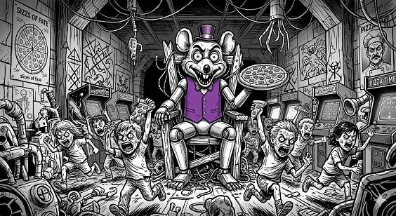

The portion of Substreet dwellers who live in fixed settlements call themselves "civilized". These communities may range from two or three families living in a single wall to societies of over a thousand. These settlements are sustained by a steady stream of scavenged food, but also through organized hunting and gathering expeditions.
Nomads are wandering families who have very simple societies. They are a source of rumors about events in other parts of the Substreet, but generally do not pay much attention to the affairs of Humans and come off as rather insular to some. Nomads are the Animal vanguard, they are the first to move into an area, exploring it and sometimes even settling down and becoming civilized.
These are groups of Animals which prey on travelers, be they Nomads, merchants, or Civilized scavenging parties. Unlike Nomads they are heterogenous, being made up of Rats and Mice (but not Salamanders) who are outcasts. They are typically led by a charismatic leader, and the Raider clan quickly falls apart when the leader is killed - even during a battle!
Depending on who is opining, Surface Dwellers are the bravest or craziest Animals. They are quite often loners or move in small groups of three or four. Unlike Raiders, they (usually) do not make their living by robbing others, but are expert scavengers. These are the Animals who are most likely to be familiar with Human society.

Chuckey Cheese is a gigantic gray Rat who rules in hellish temples filled with loud noises, flashing lights, and hordes of screeching Human children who run in all directions. Chuckey feeds His army with an unending supply of pizzas, and the very bravest scavengers will, on occassion, test their courage by visiting one of His temples to feast on the leftovers while He sleeps.
He is worshipped by some Surface Dwellers, but doing so is seen as truly bizarre by those who dwell underground. Those in the Substreet who are more familiar with Humans and their ways are aware that this is supposedly a place of mirth and Chuckey an abstraction, but its terrifying nature underscores the vast psychological gap between Animals and Humans.
Mickey Mouse is a Messiahanic figure who, it is claimed, will one day arrive and bring about a reconciliation between Humans and Animals. Rats, Mice, and Salamanders will step into the light and Cats, owls, dogs, and all other predators will be thrown into a deep pit where they will prey on each other until none are left. Scavenged objects bearing His likeness are common in the Substreet, but there are in few actual adherents to His cult.
Squeak is the Mouse who stands up to the demonic Cat Garfield, stealing his cheese for the good of the tribe. Squeak is easily the most popular deity of all Mice and Rats and expressions containing His name are even invoked by atheists ("oh my Squeak", "Squeak only knows"). Most cities contain small statues of Squeak near their exits which inhabitants kiss or stroke as they pass by for luck.
Substreet